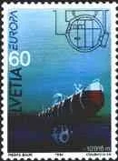
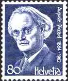
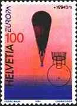
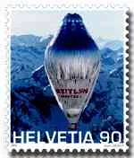
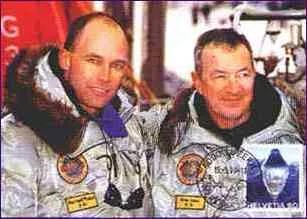
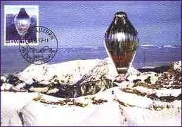
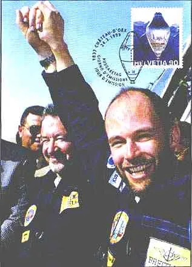
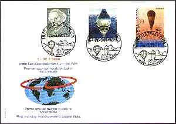
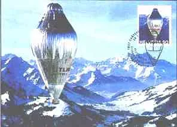

Home / champs / World Balloon Flight
World Balloon Flight
From the original Art on Stamps archive

It was for the third time as the Swiss Bertrand Piccard, this time together with Brian Jones tried to fulfill the impossible dream: to turn around the Earth in a balloon, using the fast Jet Streams of the upper atmosphere. On board for the third time running, Bertrand Piccard needs no introduction. A medical doctor specializing in psychiatry, Bertrand Piccard has first-hand experience of virtually all forms of free flight. Among the first hang-gliding enthusiasts at the age of sixteen, he became the European acrobatics champion, invented several acrobatic figures and established a world altitude record. A qualified ultra-light flyer and hang-gliding instructor, he also enjoys paragliding. He made his first hot-air balloon flight in 1979. Along with Whim Verstraeten, a fellow crew-member during the two previous round-the-world balloon attempts, he won the Chrysler Transatlantic Challenge in 1992. Bertrand is the grandson of Prof. Auguste Piccard, the Swiss physician famous for his important inventions, particularly that of the pressurized cabin. His grandfather was the first man to reach the stratosphere in a balloon (see Belgium, 1932, Scott #251-253) and invented the Bathyscaphe, a submarine which Jacques Piccard, Bertrand's father, took down to 10,916 meters, the deepest point of the globe. Born in 1958, Bertrand Piccard is married and has three daughters.



August Piccard and the exploits of Piccards on Swiss stamps
Born March 27, 1947 in Bristol, Brian Jones is married, father of two and has three grandchildren. He learned to fly at the age of sixteen. He has spent 13 years with the Royal Air Force. He developed his passion for ballooning back in 1986. Soon thereafter, he acquired his commercial balloon flying license and became an instructor in 1989. Brian is also a certified examiner for balloon flight licenses by the British Civil Aviation Authority. From the early stage, Brian was the designated back-up pilot for the project and has thus undergone all the required training, including during the previous BREITLING attempt. Second-in-command to chief of mission Alan Noble, Brian has accumulated close to 5000 flight hours, of which 1200 were clocked up aboard a balloon. In 1997-98, he lent a hand organizing the BREITLING ORBITER 2 attempt, assisting Alan Noble at mission control center in Geneva. Until now, Brian was BREITLING ORBITER 3 project manager, responsible for the construction of the gondola and of the flight systems.

The Swiss Postal Administration made a big effort and issued a stamp dedicated to the event only three days after the successful landing. It has taken two day and two nights to make ready the first print of 5 million stamps. All these stamps sold-out in Switzerland in only two hours. A second print was made available at POs two weeks later.
The two adventurers started the 3/1/99, 17h20 GMT from Château d’Oex, in the Swiss Alps. They followed permanently the exact flight plan of the team of Swiss meteorologists from the Geneva airport. After a successful – though slightly windy – launch, Monday morning at 8h05 GMT, Breitling Orbiter 3 climbed to an altitude of 7'000 meters (21'000 feet) in a little more than one hour and started its historical flight. 3/20/99, at 09h54 (GMT) Breitling Orbiter's round the world balloon flight completed. the Breitling Orbiter 3 passed the " finishing line " of 9.27° over Mauritania, North Africa, completing its round the world balloon trip. Bertrand Piccard and Brian Jones have now become the first balloonists to circumnavigate the globe with a non-stop, non-refueled flight. It has taken the Breitling team 19 days, 1 hour and 49 minutes to travel the 42'810 km and it has beaten all previous records of duration and distance. 3/21/99 Breitling Orbiter 3 has landed successfully in a desert located in the south-east of Egypt. The full history of the flight can be found at: www.breitling-orbiter.ch/ The balloon will be permanently exposed at the Smithsonian Institute in Washington DC, USA.


The main sponsor of this incredible four years adventure was the Swiss watch company BREITLING. It is specialized in developing and manufacturing technical watches - mostly mechanical and electronic chronographs - meaning watch instruments of a quality corresponding to the parameters of intensive and continuous use. You can visit its site at: www.breitling.com The ballon was manufactured by the company of Don Cameron, from Bristol, GB. Note that Brian Jones was born in Bristol too.



Ayn Rand Bill Gates Martina Hingis Leonard Cohen J.W von Goethe